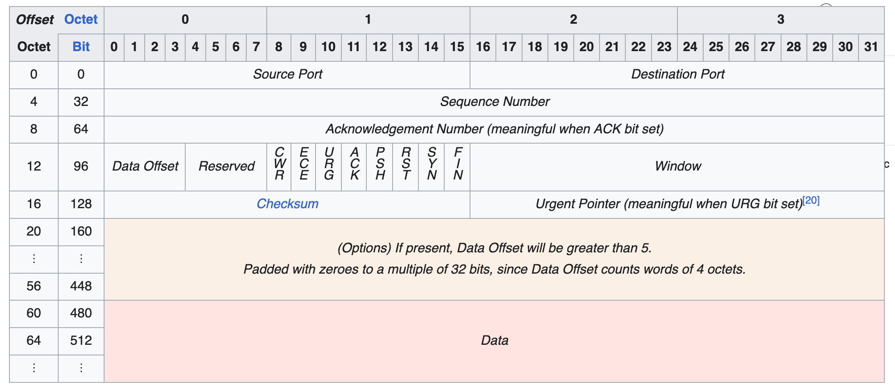

TCP Stack Sim
Posted on 19/01/2026
Word count: 510
Having completed many cyber security focused courses in the previous year, I had a basic understanding of networking but nothing that substantial. I undertook this project to become more familiar with the inner workings of one of the most fundamental networking protocols: Transmission Control Protocol (TCP).
My goal here was not to reinvent the protocol itself, but to simulate two entities communicating with each other through the use of a simplified self-implemented TCP stack. Some notable features of this project include: the ability to read and write TCP flags, establish TCP connection states, send and receive data between a client and server, and simulate the TCP packet structure.
Project Debrief
Python's socket library is doing a lot of heavy lifting here and is used to establish the true network connection between the client and server. My project is only supposed to focus on the functionality of TCP, and this library deals with a lot of complex low-level networking that I didn't want to tackle here.
First, I created a simple echo server using the socket library mentioned above to understand how a connection is created between two python files, and how data is transmitted between them. After this, I was initially sending TCP flags as strings over the network but changed the format to be one dictionary containing all flags that either have the value 0 or 1. This change was made to better mimic how real world TCP flags are stored and set.
TCP Segment
The TCP segment image above helps to visualise how flags are set. Flags are stored in the second octet of a segment and are given a total of 8 bits of space, 1 bit for every flag (0 or 1). Depending on which flag is set to 1 will determine what state the client/server will switch to and which flag will be transmitted in the next packet transfer. Otherwise, if the flag is set to 0 then it's ignored and the next bit is read. This is what my flag dictionary is replicating.
All flag bits, data, data length, sequence number, acknowledge number, and checksum are compiled into a byte stream, encoded in UTF-8, and sent through the established socket.
States, as opposed to flags, are not sent over the network in a TCP segment but are instead set locally on each machine in memory. States are used to manage several things throughout transmissions between two entities such as determining the order of communication.
Future Additions
I want to included detailed logging and timestamps to each packet transmitted mainly to facilitate easier debugging. I would also like to be able to simulate packet loss or delay.
Perhaps making the project multi-threaded would be interesting, allowing it to handle multiple clients requesting data from a singular server.
Finally I would love to be able to simulate various TCP attacks such as a SYN flood attack and how my stack would handle these events.